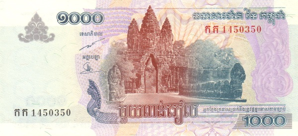
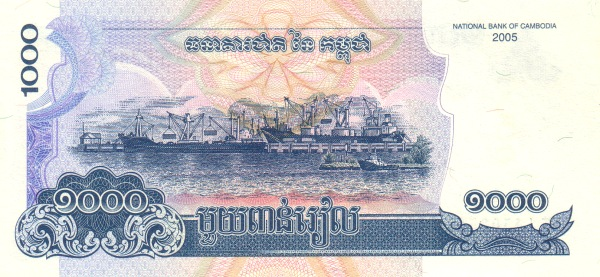
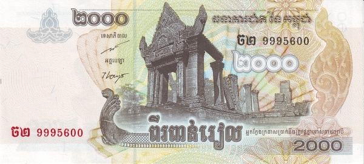
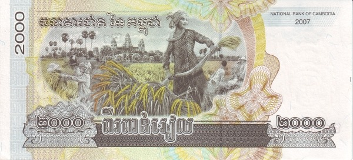
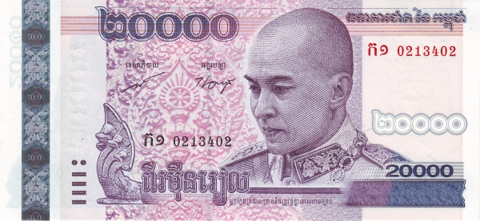
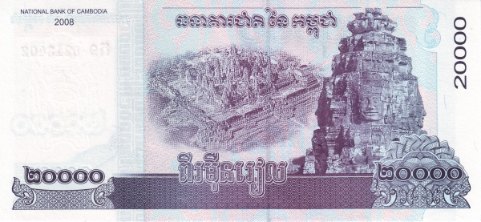
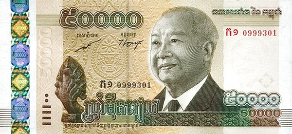
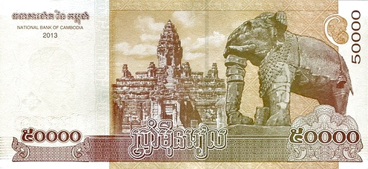

Камбоджа - Риель
1000 риелей
 Лицевая сторона - портрет Нородома Сианука, герб государства, голова наги
Обратная сторона - королевский дворец, погребальное судно с телом монарха
2000 риелей
 Лицевая сторона - портрет Нородома Сианука, герб государства, голова наги
Обратная сторона - Нородом Сианук проводит солдат через реку, Монумент Независимости в Пномпене
20000 риелей
 Лицевая сторона - портрет Нородома Сиамони, голова наги
Обратная сторона - вид на Ангкор-Ват, четыре лица бодхисаттвы Авалокитешвары
50000 риелей
 Лицевая сторона - портрет Нородома Сианука, голова наги
Обратная сторона - слон на фоне храмового комплекса